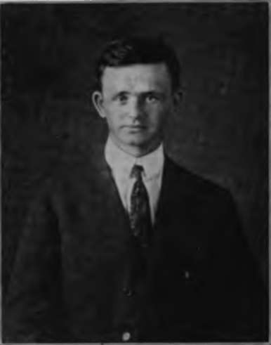
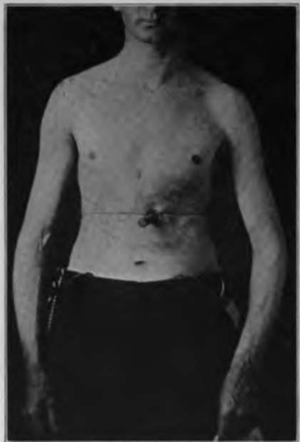

Chapter III. The Stomach In Hunger. I. Methods Of Investigation
Description
This section is from the book "The Control Of Hunger In Health And Disease", by Anton Julius Carlson. Also available from Amazon: The Control of Hunger in Health and Disease.
Chapter III. The Stomach In Hunger. I. Methods Of Investigation
Several methods are available for studying the tonus and contractions of the empty stomach both in man and experimental animals, namely: (i) direct inspection by means of a permanent opening (gastric fistula) into the stomach through the abdominal wall; (2) the introduction of a rubber balloon into the stomach, either through the esophagus or through the gastric fistula, and recording the variations in pressure on the distended balloon due to contractions in the stomach; (3) the introduction into the stomach of a balloon coated with bismuth paste on the inside. This permits graphic recording of the stomach movements syn: chronously with X-ray photography or inspection by aid of the fluoroscope, and, in man, recording the subjective sensations.
In our work all three methods have been employed. During the last four years the author has been fortunate in having in his service a "second Alexis St. Martin,,, a man with complete closure of the esophagus and a permanent gastric fistula of twenty years' standing. The gastric fistula is large enough to permit direct inspection of the interior of the stomach, and the introduction of balloons, rubber tubes, and small electric lights for various investigations. This man, Fred Vlcek, a native of Trebone, Bohemia, is now thirty-one years old. For the last twenty years, or since 1897, he has fed himself through a permanent gastric fistula owing to complete closure of the esophagus, as a result of accidentally drinking a strong solution of caustic soda.
Previous to the swallowing of the caustic the boy had always been healthy. Since the completion of the gastric fistula in 1897, he has enjoyed good health except that he suffered an attack of pneumonia in 1908. Mr. V. came to America in 1910. He is in good physical condition, height 5 ft. 8 in.; weight, 62 kg. With the exception of the closed esophagus and the gastrostomy, the man is in every respect in normal health, and of good average physical development. The size, form, and position of the stomach is that of the "orthotonic" type- The opening into the stomach is on the lesser curvature about 4 cm. on the fundus side of the "transverse band." The fistula is large enough to admit a rubber tube three-fourths of an inch in diameter, and a rubber tube of this size is always kept in the fistula. It is usually pushed in to a depth of 3 to 4 inches. The outer end (about 3 inches) is kept corked and bent under the bandage between meals. The tube is changed once a month. Although the tube fits rather snugly in the opening, there is at timfs some leakage of gastric juice around it, and in consequence some corrosion of the skin for a considerable area around the tube. The stomach mucosa joining the skin or scar tissue has the same appearance and seems to show the same sensitiveness as the rest of the stomach mucosa. X-ray photographs and direct inspection by the fluoroscopc show that the esophagus is completely closed at the level of the sternum.
Fig. 1.-Mr. F. V. Twenty years after |ierma-nent closure of the esophagus and establishment of the gastric fistula.
Fic. 2.-Photograph showing permanent gastric fistula of Mr. F. V., with rubber tube in lit*.
A normal person readily learns to swallow a small rubber balloon with a small flexible rubber-tube attachment, and to keep these in place for hours without the least discomfort or annoyance. There is some salivation to begin with, but this soon ceases. Adults as well as infants with this apparatus in the stomach and mouth find no difficulty in going to sleep during an observation period. It is easier to swallow this apparatus than an ordinary stomach tube, as the latter is too thick and inflexible. The method has been used on newborn infants with success. It is being used in the author's laboratory by graduate and medical students. The method is so readily mastered as to make it generally available in physiological, psychological, and clinical work. The main points involved are: (i) the selection of balloon and rubber tubing of proper size and flexibility; (2) the balloon and tube must be swallowed, not pushed down into the stomach; (3) the avoidance of discomfort or aversion by proper training.
The stomach contractions are recorded from the balloon in the stomach connected by a rubber tube with a water, bromoform, or chloroform manometer. The balloons used by us on man varied in capacity from 75 to 150 c.c. In our observations on infants balloons of smaller size were, of course, employed. And in the work of the stomach (rumen) of goats, balloons of greater strength and capacity are preferable. When bromoform manometers were used a manometer tube 1.5 cm. in diameter was found serviceable. The air pressure in the balloon with the stomach at relative rest was usually adjusted at 3 to 6 cm. of bromoform. After trying out balloons of varying capacities and thickness, we concluded that a condum of the thinnest rubber available in the market was the most serviceable, as this balloon when collapsed is easily swallowed. The advantage of such a delicate balloon is in recording the weaker tonus changes or contractions, and the pulse beat in the stomach. The only disadvantage is the occasional breaking of the balloon by an exceptionally sudden and vigorous stomach contraction, especially when a bromoform manometer is used for recording.
For the convenience of the reader who may not be familiar with the ordinary technique of graphic registration, a diagram illustrating the balloon method as used on man is shown in Fig. 4 in the hope that it may aid in interpreting the various stomach tracings reproduced in this and subsequent chapters.
Continue to:
- prev: Historical Steps In The Experimental Investigation Of The Hunger Mechanism. Continued
- Table of Contents
- next: II. Movements Of The Empty Stomach In Man